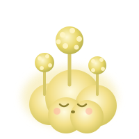
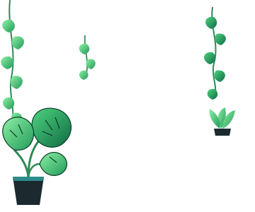

方向 A2 // FLUFF.NEON.PLANT
毛絨 × 霓虹植栽
雨下不停的賽博公寓，植物燈徹夜亮著。
絨毛黴菌和黃金葛一起住進來，誰也不趕誰。



颱風夜 · 植物燈全開
RH 88% / 24H 招牌還亮著 / 黃金葛長得比黴菌快


方向 A2 // FLUFF.NEON.PLANT
雨下不停的賽博公寓，植物燈徹夜亮著。
絨毛黴菌和黃金葛一起住進來，誰也不趕誰。

RH 88% / 24H 招牌還亮著 / 黃金葛長得比黴菌快

